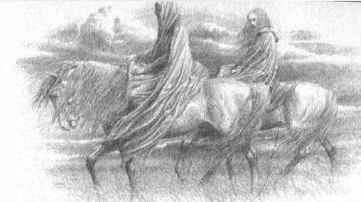

14
Kara kış geçtiğinde Nargothrond’dan Doriath’a yeni haberler geldi. Çünkü o yağmadan kaçanlar olmuştu ve kışın yabanda hayatta kalmayı başarmış, sonunda gelip Thingol’dan sığınak istemişlerdi ve bataklık nöbetçileri onları Kral’ın huzuruna getirmişti. Ve bazıları, düşmanın bütün güçlerinin kuzeye çekildiğini, diğerleri Glaurung’un hâlâ Felagund salonlarında yaşadığını söylüyordu; ve bazıları Mormegil’in öldürüldüğünü, diğerleri onun ejderhanın büyüsüne kapıldığını ve taşa dönüşmüş biri gibi hâlâ orada olduğunu söylüyordu. Ama herkes, sonuçta, Nargothrond’da Kara Kılıç’ın Dor-lóminli Húrin’in oğlu Túrin olduğunun bilindiğini söylüyordu.
Bunun üzerine Morwen ile Niënor büyük bir korkuya ve üzüntüye kapıldı; ve Morwen şöyle dedi: “Bu tür kuşkular Morgoth’un eseridir! Gerçeği öğrenmemiz, tahammül etmemiz gereken en kötü şeyi kesin olarak bilmemiz gerekmez mi?”
Thingol de Nargothrond’un kaderi hakkında daha fazla bilgi almak istiyordu ve oraya ihtiyatla gidecek bazılarını göndermeyi aklına koymuştu bile ama Túrin’in gerçekten de öldüğünü ya da kurtarılamayacak durumda olduğuna inanıyordu ve Morwen’in bunu açıkça öğrendiği saati görmek istemiyordu. Bu yüzden ona şöyle dedi: “Bu vahim bir mesele, Dor-lómin’in Hanımı ve üzerinde mutlaka düşünülmesi gerek. Bu tür kuşkular gerçekten de Morgoth’un işi olabilir, bizi düşüncesiz bir harekete sevk etmeye çalışıyor olabilir.”
Ama endişeden çılgına dönmüş olan Morwen haykırdı: “Düşüncesizlik mi, beyim! Oğlum aç açına ormanda saklanıyorsa, bağlanmışsa, cesedi açıkta yatıyorsa, gerçekten de düşüncesizce hareket ederim. Onu bulmak için zaman kaybetmem.”
“Dor-lómin’in Hanımı,” dedi Thingol, “Húrin’in oğlu bunu asla istemezdi. Senin, burada, Melian’ın korumasında, geriye kalan tüm topraklardan daha iyi bakıldığını düşünürdü. Húrin ve Túrin’in hatırına, bu günlerin kara tehlikesi içinde dışarıda dolanmana izin veremem.”
“Túrin’i tehlikeden alıkoyamadın, ama beni ondan alıkoymak istiyorsun,” diye haykırdı Morwen. “Melian’ın korumasında! Evet, Kuşak’ın tutsağı olarak! Buraya gelmeden önce uzun zaman uzak durdum ve şimdi geldiğime üzülüyorum.”
“Hayır, böyle konuşuyorsan, Dor-lómin’in Hanımı,” dedi Thingol, “şunu bil: Kuşak açıktır. Özgürce geldin buraya: Kalmak ya da gitmekte de özgürsün.”
Bunun üzerine, o ana dek sessiz kalan Melian konuştu: “Buradan gitme, Morwen. Doğru bir söz sarf ettin: Bu kuşku Morgoth’un işi. Gidersen, onun iradesiyle gitmiş olacaksın.”
“Morgoth korkusu beni oğlumun çağrısından alıkoyamaz,” diye yanıt verdi Morwen. “Ama benim için korkuyorsan, beyim, halkından birkaç kişiyi bana ödünç ver.”
“Sana ben emir vermiyorum,” dedi Thingol. “Lâkin halkım benim emrim altındadır. Onları kendi fikrime göre gönderirim.”
Bunun üzerine Morwen daha fazlasını söylemedi, ama ağladı; ve Kral’ın huzurundan ayrıldı. Thingol’un yüreği ağırdı, çünkü Morwen’in çılgına dönmüş gibi göründüğünü düşünüyordu; ve Melian’a, onu kendi gücüyle engelleyip engellemeyeceğini sordu. “Şerrin gelişine karşı pek çok şey yapabilirim,” diye yanıt verdi Melian. “Lâkin gitmek isteyenlerin gidişine karşı hiçbir şey yapamam. Bu sana düşer. Eğer burada tutulacaksa, onu güç kullanarak tutmalısın. Lâkin, bir ihtimal ki, bu yolla aklını yitirmesine neden olursun.”
Sonra Morwen Niënor’a gitti ve şöyle dedi: “Elveda, Húrin’in kızı. Ben oğlumu ya da ondan gerçek haber aramaya gidiyorum, çünkü buradaki hiç kimse bir şey yapmayacak ve çok geç olana dek oyalanacak. Talih eseri dönmemi bekle burada.” Bunun üzerine, dehşet ve keder içindeki Niënor onu vazgeçirmeye çalıştı, ama Morwen hiçbir şeye yanıt vermedi, odasına girdi ve sabah geldiğinde atını alıp gitmişti.
Thingol, kimsenin onu durdurmamasını ya da ona pusu kurmuş gibi görünmemesini emretmişti. Ama Morwen gider gitmez, en zorlu, en becerikli bataklık nöbetçilerini topladı ve başlarına Mablung’u getirdi.
“Hızla takip edin,” dedi, “ama kendinizi ona belli etmeyin. Ama Morwen yabana girdiğinde, tehlike tehdit ederse, kendinizi gösterin; ve eğer geri dönmezse, elinizden geldiğince koruyun onu. Ama bazılarınızın gidebildiğince ileri gitmesini ve öğrenebileceği her şeyi öğrenmesini istiyorum.”
Böylece, Thingol, başta düşündüğünden daha büyük bir grup gönderdi ve aralarında yedek atları da bulunan on atlı vardı. Morwen’i izlediler; ve Morwen Region üzerinden güneye gitti ve böylece Alacakaranlık Meres’in üzerindeki Sirion kıyılarına geldi; orada durdu, çünkü Sirion geniş ve hızlıydı ve Morwen yolu bilmiyordu. Bu yüzden korumaları kendilerini göstermek zorunda kaldı; ve Morwen şöyle dedi: “Thingol beni durduracak mı? Yoksa geç de olsa reddettiği yardımı mı gönderiyor?”
“İkisi de,” diye yanıt verdi Mablung. “Geri dönmez misin?”
“O zaman, kendi isteğim o yönde olmasa da, sana yardım etmek zorundayım,” dedi Mablung. “Sirion burada geniş ve derindir ve karşıya yüzmek hem insan hem hayvan için tehlikelidir.”
“O zaman, elf halkı karşıya geçmek için hangi yolu kullanıyorsa, o şekilde beni karşıya geçirin,” dedi Morwen, “yoksa yüzmeyi deneyeceğim.”
Bu yüzden Mablung Morwen’i Alacakaranlık Meres’e yönlendirdi. Orada, doğu kıyısında, derelerin ve sazların arasına sallar saklanmıştı; çünkü Thingol ile Nargothrond’daki soydaşları arasında gidip gelen ulaklar bu yolu kullanıyordu. Yıldız ışıkları ile aydınlanan gece ilerleyene dek beklediler ve şafaktan önce, beyaz pusların arasında karşıya geçtiler. Ve güneş Mavi Dağların ötesinde kırmızı kırmızı yükselirken ve güçlü sabah rüzgarı pusları dağıtırken, korumalar batı kıyısına tırmandı ve Melian Kuşağı’nı terk etti. Doriath Efleri uzun boylu, gri giyimliydiler ve zincir zırhlarının üzerine pelerin takmışlardı. Morwen onların geçmesini saldan sessizce izledi ve sonra aniden bağırarak, geçip gidenlerin sonuncusuna işaret etti.
“O nereden geldi?” dedi. “Bana otuz kişi geldiniz. Kıyıya otuz bir kişi çıktı!”
Sonra diğerleri döndü ve güneşin altın bir başı aydınlattığını gördüler: zira o Niënor’du ve rüzgar başlığını arkaya süpürmüştü. Böylece, Niënor’un grubu takip ettiği ve onlar ırmağı geçmeden, karanlıkta onlara katıldığı anlaşıldı. Hepsi dehşete düşmüştü, en çok da Morwen. “Geri dön! Geri dön! Sana emrediyorum!” diye bağırdı.
“Kan çağırdığında, her tür öğüde karşı çıkarak, Húrin’in karısı gidiyorsa,” dedi Niënor, “Húrin’in kızı da gidebilir. Bana yas ismini koydun, ama babam, ağabeyim ve annemin yasını tek başıma tutmayacağım. Ama bunların arasında yalnızca seni tanıdım ve hepsinden fazla sevdim. Ve senin korkmadığın hiçbir şeyden korkmuyorum.”
Gerçekten de, yüzünde ya da tavrında pek az korku görülüyordu. Uzun boylu ve güçlüydü; çünkü Hador’un evinden olanlar iriyarı olurdu ve bu yüzden, elf kıyafetlerine bürünmüşken, yalnızca en irilerinden daha ufak tefek olduğundan korumaların arasına karışabilmişti.
“Ne yapmak istiyorsun?” dedi Morwen.
“Senin gittiğin yere gitmek,” dedi Niënor. “Sana şu seçimi getirdim. Beni geri götürüp, güvenle Melian’ın korumasına emanet edebilirsin; çünkü onun öğüdünü reddetmek akıllıca değildir. Ya da, sen gidersen, benim de tehlikeye atılacağımı bilirsin.” Çünkü, aslında Niënor daha çok, annesinin onun için hissettiği korkuyla ve sevgiyle geri döneceğini umarak gelmişti; ve Morwen gerçekten de kararsız kalmıştı.
“Öğüdü reddetmek bir şeydir,” dedi. “Annenin emrini reddetmek bambaşka bir şey. Şimdi geri dön!”
“Hayır,” dedi Niënor. “Çocukluktan çıkalı çok oldu. Benim de kendime ait bir iradem ve bilgeliğim var, yalnız şimdiye dek seninkiyle çatışmadı. Seninle geleceğim. Oraya hükmedenlere saygımdan, Doriath’a gitmeyi tercih ederim; ama bu olmazsa, batıya. Gerçekten de, ikimizden biri gidecekse, gücünün doruğunda olan benim gitmem daha doğru olur.”
Bunun üzerine, Morwen Niënor’un gri gözlerinde Húrin’in azmini gördü; ve kararsız kaldı, ama kendi gururunu alt edemedi ve (güzel sözlerine rağmen) kızının onu elinden tutup, yaşlı ve bunak biri gibi geri götürmesini istemiyordu. “Amaçladığım gibi, yoluma devam edeceğim,” dedi. “Sen de gel, ama isteğime karşı çıkarak.”
“Öyle olsun,” dedi Niënor.
Bunun üzerine Mablung adamlarına şöyle dedi: “Hakikat şu ki, Húrin’in soydaşları cesaret eksikliğinden değil, tavsiye dinlemedikleri için keder getiriyor başkalarına! Túrin’de de böyle oldu; ama atalarında böyle değildi. Ama şimdi hepsi aklını yitirdi ve hiç hoşuma gitmiyor bu. Kurt’u avlamaktan ziyade, Kral’ın verdiği bu görevden daha çok korkuyorum. Ne yapmalı?”
Ama kıyıya gelmiş, yaklaşmış olan Morwen onun son sözlerini duydu. “Kral’ın istediğini yap,” dedi. “Nargothrond’dan ve Túrin’den haber ara. Çünkü hepimiz bu amaç için geldik.”
“Yol uzun ve tehlikeli,” dedi Mablung. “Daha ileri gidecekseniz, ikiniz de at binecek ve atlıların arasında gidecek ve onlardan bir adım uzaklaşmayacaksınız.”
Böylece, gün doğduğunda yola koyuldular; sazlar ve bodur söğütlerle kaplı araziden ağır ağır ve ihtiyatla çıktılar ve Nargothrond’un güneyindeki ovanın büyük kısmını kaplayan kurşuni koruluğa geldiler. Gün boyunca batıya doğru ilerlediler ve tenhalıktan başka hiçbir şey görmediler, hiçbir şey işitmediler; çünkü topraklar sessizdi ve Mablung’a, o toprakların üzerinde bir korku asılıymış gibi geldi. Seneler önce Beren de bu yoldan yürümüştü ve o zaman koruluklar avcıların gizli gözleri ile doluydu; ama şimdi tüm Narog halkı gitmiş gibiydi ve orklar henüz bu kadar güneye inmemiş gibiydiler. O gece, kurşuni korulukta, ateş ya da ışık yakmadan kamp kurdular.
Takip eden iki gün ilerlemeye devam ettiler ve Sirion’dan sonraki üçüncü günün akşamı ovaya inmişlerdi ve Narog’un doğu kıyılarına yaklaşıyorlardı. O sırada Mablung’un üzerine öyle bir huzursuzluk çöktü ki, Morwen’e daha ileriye gitmemek için yalvardı. Ama Morwen güldü ve şöyle dedi: “Bizden bir an önce kurtulduğuna memnun olacaksın, ki öyle olacakmış gibi görünüyor. Ama bize bir süre daha tahammül etmelisin. Artık korkuyla geri dönemeyecek kadar uzağa geldik.”
Bunun üzerine Mablung haykırdı: “İkiniz de aklınızı yitirmişsiniz ve pervasızsınız. Haber toplamamıza yardımcı olmaktansa, bu amacı engelliyorsunuz. Şimdi kulak ver bana! Seni güç kullanarak engellememem söylendi; lâkin, elimden geldiğince korumam da istendi. Böyle bir durumda, bunların yalnızca birini yapabilirim. Ve ben seni koruyacağım. Seni yakındaki Amon Ethir’e, Casustepesi’ne götüreceğim; ve orada, nöbetçiler eşliğinde oturacak ve ben burada emirler verirken yerinden kıpırdamayacaksın.” Amon Ethir, uzun süre önce, Felagund’un büyük zahmetle Narog’un bir fersah doğusunda, kapılarının önünde yaptırdığı, tepe kadar yüksek bir tümsekti. Zirvesi hariç her yerinde ağaçlar büyümüştü ve üzerinden, Nargothrond’a giren büyük köprüye giden bütün yollar ve çevrelerindeki araziyi içeren geniş bir manzara görülebiliyordu. Bu tepeye sabahın ilerleyen saatlerinde geldiler ve doğudan tırmandılar. Sonra, ırmağın ötesinde çıplak ve kahverengi duran Yüksek Faroth’a bakan Mablung, elf görüşü sayesinde, dik batı yamacındaki Nargothrond taraçalarını ve yüksek duvarda minik, siyah bir delik gibi görünen, açık Felagund Kapılarını gördü. Ama hiçbir ses duyamıyordu ve düşmana dair bir iz, yağma günü kapıların çevresinde bıraktığı yanık lekeleri dışında ejderhadan da bir işaret göremiyordu. Soluk güneş altında her şey sessizdi.
Daha önce belirtildiği gibi, Mablung on süvarisine Morwen ile Niënor’u tepenin zirvesinde tutmalarını ve büyük bir tehlike doğmadığı sürece, o dönene dek hiçbir yere kıpırdamamalarını emretmişti: ve eğer tehlike olursa, süvariler Morwen ile Niënor’u aralarına alıp, gidebildikleri kadar hızla doğuya, Doriath’a doğru kaçacaklar, haber getirmek ve yardım istemek için de aralarından birini önden göndereceklerdi.
Sonra Mablung kalan yirmi kişiyi aldı ve gizlice tepeden indiler; ve sonra batıdaki, ağaçların seyrek olduğu tarlalara girerek yayıldılar ve her biri, cüretle ama gizlice, Narog kıyılarına yollandı. Mablung en ortadan, köprüye doğru ilerledi ve yakın ucuna vardığı zaman köprünün tamamen yıkılmış olduğunu gördü; ve derin yataklı nehir, çok daha kuzeydeki yağmurlardan sonra vahşileşmiş, yıkılan taşların arasında köpüre köpüre kükrüyordu.
Ama Glaurung, yıkık kapılardan içeri giden büyük geçidin gölgelerinde uzanmış bekliyordu ve Orta Dünya’da başka pek az göz onları seçebilecek olsa da, uzun zamandır casusların farkındaydı. Onun aşağılık gözleri kartallarınkinden de keskindi ve elflerin uzak görüşlerini bile aşıyordu; ve gerçekten de, bazılarının geride kaldığını ve Amon Ethir’in çıplak zirvesinde oturduklarını da biliyordu.
Böylece, Mablung kayaların arasında ilerler, vahşi ırmağı köprünün yıkık taşlarının üzerinden geçip geçemeyeceğini anlamaya çalışırken, aniden Glaurung ateşler püskürterek ortaya çıktı ve ırmağa doğru süründü. Hemen, büyük hışırtılar eşliğinde buharlar yükseldi ve Mablung ile onu izleyenlerden yakına gizlenmiş olanlar kör edici bir buhara ve pis bir kokuya boğuldular; ve çoğu, tahmin edebildiğince, Casustepesi’ne doğru kaçtı. Ama Glaurung Narog’un üzerinden geçerken, Mablung kenara çekilip bir kayanın altına saklandı ve orada kaldı; çünkü henüz yapacak bir görevi varmış gibi geliyordu. Artık Glaurung’un gerçekten de Nargothrond’da yaşadığını biliyordu, ama aynı zamanda, elinden geliyorsa Húrin’in oğlu hakkındaki gerçeği de öğrenmesi istenmişti; ve bu yüzden, yürekli bir biçimde, Glaurung gider gitmez ırmağı geçmeyi ve Felagund evlerini aramayı amaçlıyordu. Çünkü Morwen ile Niënor’u korumak için elden gelen her şeyin yapıldığını düşünüyordu: Glaurung’un gelişini göreceklerdi ve şu an bile, atlılar dörtnala Doriath’a gidiyor olmalıydılar.
Böylece Glaurung, pusların içinde devasa bir şekil halinde Mablung’un yanından geçti; ve hızla uzaklaştı, çünkü o kudretli bir Solucan’dı, ama çevikti. Sonra Mablung, onun ardından, büyük tehlikeyi göze alarak Narog’u geçti; ama Amon Ethir’den izleyenler ejderhanın gelişini gördüler ve dehşete düştüler. Hemen, Morwen ile Niënor’dan itiraz etmeden atlarına binmelerini istediler ve söylendiği gibi doğuya kaçmaya hazırlandılar. Ama daha tepeden ovaya inerlerken habis bir rüzgar büyük dumanları onların üzerine üfledi ve hiçbir atın dayanamayacağı pis bir koku getirdi. Sonra, sis yüzünden körleşmiş, ejderha kokusu yüzünden delice bir dehşete kapılmış olan atlar, kısa zamanda idare edilemez hale geldiler ve çılgınca dört bir yana kaçıştılar; korumalar dağıldı ve ağaçlara çarpıp fena yaralandılar, ya da boş yere birbirlerini aradılar. Atların kişnemeleri ve binicilerin bağırışları Glaurung’un kulaklarına geldi; ve çok memnun oldu.
Sisin içinde atıyla başa çıkmaya çalışan elf atlılardan biri, aniden Morwen Hanım’ın, deli bir atın üzerindeki gri hayalet gibi, yakından geçtiğini gördü, ama Morwen, Niënor diye haykırarak sislerin içinde kayboldu ve onu bir daha göremediler.
Ama atlılar kör dehşete kapıldıklarında, Niënor’un atı çılgınca koşarken tökezlemiş ve Niënor’u yere fırlatmıştı. Yumuşak bir biçimde çimenlerin üzerine düşen Niënor yaralanmamışti; ama ayağa kalktığında yalnızdı: atından ve yoldaşlarından yoksun, sisin içinde kaybolmuştu. Cesaretini yitirmedi ve düşünmeye başladı; o ya da bu sese doğru gitmeyi faydasız buldu, çünkü her yerden ses geliyordu, ama sesler gittikçe zayıflıyordu. Böyle bir durumda, tepeye dönmeye çalışmak daha doğru göründü: kuşkusuz, çekip gitmeden önce, sırf yoldaşlarının orada kalıp kalmadığından emin olmak için de olsa, Mablung da oraya giderdi.
Bu yüzden, ayaklarının önündeki arazinin yükselmesine bakıp, tahmin üzerine yürüyerek, gerçekten de yakında olan tepeyi buldu; ve tepeye doğudan tırmanan patikada ağır ağır yürüdü. O tırmanırken sis seyreldi ve sonunda Niënor çıplak zirvedeki gün ışığına çıktı. O zaman ilerledi ve batıya baktı. Aynı zamanda karşı yönden tırmanmış olan Glaurung’un kocaman başını hemen önünde buldu; ve daha o farkına varmadan, gözleri ejderhanın gözlerindeki aşağılık ruha bakmıştı bile ve efendisi Morgoth’un aşağılık ruhu ile dolu olan o gözler korkunçtu.
Niënor’un iradesi ve yüreği sağlamdı ve Glaurung ile mücadele etti; ama ejderha gücünü ona karşı kullandı. “Burada ne arıyorsun?” dedi.
Ve yanıt vermek zorunda kalan Niënor şöyle dedi: “Bir süre burada yaşamış olan Túrin’i arıyorum. Ama belki de ölmüştür.”
“Bilmiyorum,” dedi Glaurung. “Kadınları ve zayıfları korusun diye burada bırakılmıştı; ama ben geldiğimde onları bırakıp kaçtı. Övüngen biri, ama korkak anlaşılan. Böyle birini neden arıyorsun?”
“Yalan söylüyorsun,” dedi Niënor. “Húrin’in çocukları en azından korkak değildir. Senden korkmuyoruz.” Bunun üzerine Glaurung güldü, çünkü böylece, Húrin’in kızının onun kötü niyetine maruz kaldığını öğrenmişti. “O zaman, hem sen hem de ağabeyin aptalsınız,” dedi. “Ve övüngenliğiniz boşa çıkacak. Çünkü ben Glaurung’um!”
Sonra gözlerini Niënor’un gözlerine dikti ve Niënor’un iradesi solup gitti. Ve Niënor’a, güneş solmuş, çevresi loşlaşmış gibi geldi; ve yavaş yavaş üzerine büyük bir karanlık çöktü ve o karanlıkta boşluk vardı; Niënor hiçbir şey bilmiyordu, hiçbir şey duymuyordu ve hiçbir şey hatırlamıyordu.
Mablung, Nargothrond evlerini, karanlığa ve pis kokuya rağmen becerebildiğince uzun uzun araştırdı; ama orada canlı varlık bulamadı: kemiklerin arasında hiçbir şey kıpırdamıyordu, seslenişine hiç kimse yanıt vermiyordu. Sonunda, o yerdeki dehşetin altında bunalarak, Glaurung’un geri gelmesinden korkarak kapılara döndü. Güneş batıyordu ve arkadaki Faroth’un gölgeleri taraçaların üzerine ve aşağıdaki vahşi ırmağa düşüyordu; ama uzakta, Amon Ethir’in dibinde, ejderhanın kötücül şeklini seçtiğini sandı. Böylesine büyük bir telaş ve korku içinde Narog’a dönmek daha zor ve daha tehlikeli oldu; ve doğu kıyısına yeni ulaşıp, kıyının altına saklanmıştı ki, Glaurung yaklaştı. Ama şimdi yavaş yavaş ve sinsice hareket ediyordu; çünkü içindeki tüm ateşler tükenmişti: büyük güç harcamıştı ve karanlıkta uyuyup dinlenmek istiyordu. Böylece, kıvranarak suyun içinden geçti ve dev, kül grisi bir yılan gibi, karnıyla yeri çamurlayarak, sinsi sinsi kapılara yaklaştı.
Ama içeri girmeden önce arkasını dönüp doğuya baktı ve Morgoth’un kahkahasıyla, sönük ama korkunç bir şekilde, uzaklardaki kara derinliklerden gelen kötülüğün yankısıyla güldü. Ve sonra, bu soğuk ve alçak ses geldi: “Orada, kıyının altındaki kır sıçanı gibi yatıyorsun, kudretli Mablung! Thingol’un verdiği görevleri hiç yerine getiremiyorsun. Şimdi hemen tepeye dön ve emanetinin başına gelenlere bak!”
Sonra Glaurung inine girdi ve güneş battı, soğuk ve kurşuni akşam çöktü. Ama Mablung hızla Amon Ethir’e döndü ve tepeye tırmanırken doğuda yıldızlar belirdi. Onların ışığında, karanlık bir şeklin taş gibi durduğunu gördü. Niënor öylece bekliyordu ve onun söylediği hiçbir şeyi duymuyor, yanıt vermiyordu. Ama sonunda Mablung onun elini tuttuğunda kıpırdandı ve Mablung’un onu götürmesine izin verdi; ve o elini tuttuğu sürece takip etti, ama bıraktığı zaman durdu.
Bunun üzerine, Mablung büyük bir ıstıraba ve şaşkınlığa kapıldı; ama Niënor’u bu şekilde, yardım almadan ve yoldaşı olmadan, doğuya giden uzun yola götürmekten başka seçeneği yoktu. Böylece, uykuda gezenler gibi yürüyerek, gece gölgeler çökmüş ovaya çıktılar. Ve sabah geldiğinde Niënor tökezleyip düştü ve olduğu yerde yatıp kaldı; ve Mablung çaresizlik içinde onun yanına oturdu.
“Bu görevden boş yere korkmuyormuşum,” dedi. “Zira, aldığım son görev olacak gibi. Bu talihsiz insan çocuğu ile birlikte ben de yabanda yok olup gideceğim ve ismim Doriath’ta horgörüyle anılacak: O da, eğer sonumuza dair herhangi bir haber alınırsa. Kuşkusuz başka herkes öldürüldü ve yalnızca o kaldı, ama merhamet eseri değil.”
Glaurung’un gelişi üzerine Narog’dan kaçan gruplarından üç kişi onları bu şekilde buldu ve pus kalktıktan sonra, epey dolanıp tepeye döndüler; ve orayı boş bulunca eve dönüş yolunu aramaya başladılar. Şimdi Mablung yeniden umutlanmışti; ve birlikte kuzeye ve doğuya dönerek yollarına devam ettiler, çünkü güneyde Doriath’a dönen yol yoktu ve Nargothrond’un düşüşünden bu yana sal-koruyucularının, içeriden dışarıya gidenler dışında, karşıya geçilmesine izin vermesi yasaklanmıştı.
Yanlarında bitkin bir çocuk taşıyormuşçasına, ağır bir yolculuk oldu. Ama Nargothrond’dan uzaklaşıp, Doriath’a yaklaştıkça, Niënor’un gücü yavaş yavaş geri döndü ve elinden tutup çekildiği sürece saatlerce itaatkarca yürümeye razıydı. Ama iri iri açılmış gözleri hiçbir şey görmüyordu ve kulakları hiçbir sözü işitmiyordu ve dudaklarından tek bir laf geçmiyordu.
Ve uzun günlerden sonra, sonunda Doriath’ın batı sınırına, Teiglin’in güney tarafına yaklaştılar; çünkü Thingol’un küçük ülkesinin çitlerinden aşıp Sirion’un ötesine geçmeyi, böylece Esgalduin’in dalının yakınındaki korunaklı köprüye gelmeyi düşünüyorlardı. Orada bir süre durdular; ve Niënor’u çimenlerden bir yatağın üzerine yatırdılar ve Niënor daha önce hiç yapmadığı şekilde gözlerini kapattı ve uyumuş göründü. Sonra elfler de dinlendiler ve çok bitkin düştüklerinden dikkatsiz davrandılar. Bu yüzden, artık o bölgede, Doriath’ın çitlerine cesaret edebildiklerince yaklaşabildikleri bir yerde bol bulunan ork avcı gruplarından birinin beklenmedik saldırısına uğradılar. Çatışmanın ortasında Niënor, gece tehlike işareti duyup uykudan uyanan biri gibi yatağından fırladı ve haykırarak ormana koştu. Bunun üzerine orklar dönüp onu kovalamaya başladılar, elfler de peşlerinden. Ama Niënor’a tuhaf bir değişim gelmişti, saçları hızının rüzgarıyla arkasında savrularak, ağaçların arasında bir geyik gibi koşarak, hepsini geride bıraktı. Mablung ile yoldaşları orklara hemen yetişti ve hepsini öldürüp yollarına devam ettiler. Ama Niënor hayalet gibi geçip gitmişti ve daha da kuzeye gitmelerine, günler boyunca aramalarına rağmen ondan en ufak iz bulamadılar.
Sonra, sonunda, Mablung ıstırap ve utançla boynunu bükerek Doriath’a döndü. “Avcılarının başına yeni bir usta bul, beyim,” dedi Kral’a. “Çünkü ben şerefimi yitirdim.”
Ama Melian şöyle dedi: “Hiç de öyle değil, Mablung. Elinden gelen her şeyi yaptın ve Kral’ın hizmetkarları arasında başka hiç kimse bu kadarını yapamazdı. Lâkin talihsizliğe bak ki, boy ölçüşemeyeceğin, hem de bugün Orta Dünya’da yaşayan kimsenin boy ölçüşemeyeceği bir güçle karşılaştın.”
“Seni haber bulmaya yolladım ve bunu yaptın,” dedi Thingol. “Getirdiğin haberlerle en çok ilgisi bulunan kişilerin artık işitemeyecek durumda olması senin hatan değil. Húrin’in tüm akrabalarının sonunun bu şekilde olması hakikaten üzüntü verici, ancak suç senin değil.”
Zira, Niënor’un akılsızca yabanda dolanması yetmezmiş gibi, Morwen de kaybolmuştu. Ne o zaman, ne de daha sonra, Doriath’a ya da Dor-lómin’e onun sonuna dair herhangi bir haber gelmedi. Yine de, Mablung huzur bulamadı ve yanına küçük bir grup alarak yabana gitti üç sene boyunca, Ered Wethrin’den Sirion Dağlarına, kaybolanlardan iz ya da haber aradı.